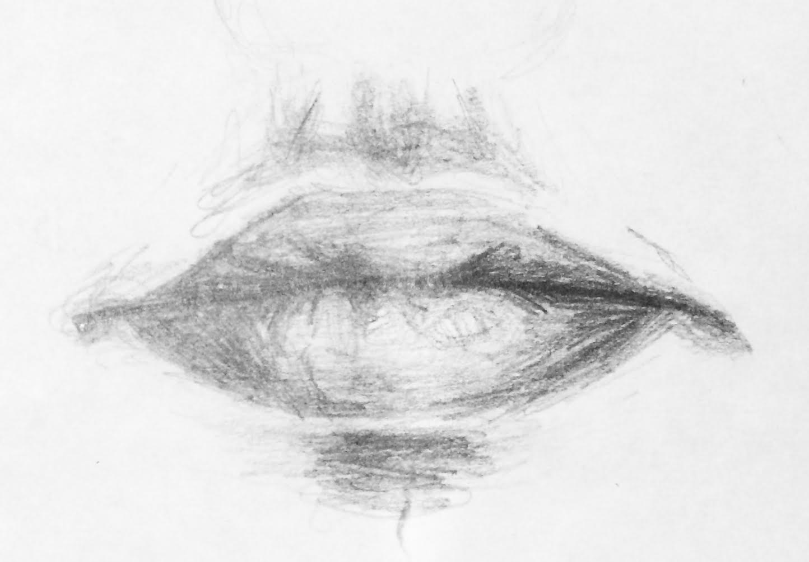

HOW TO DRAW A FACE
This tutorial will teach you haw to draw faces. It will teach you to draw from front view of a face to profile view. Most importantly it will teach you the details necessary for parts of the face, including the nose and the lips. To learn how to draw eyes view the seperate tutorial for eyes.
FRONT:
Click Here To View the tutorial on the Front View!
PROFILE:
Click Here To View the tutorial on the Profile View!
3/4:
Click Here To View the tutorial on the Three Quarters View!
NOSE:

Click Here To View the tutorial on How to Draw a Nose!
LIPS:

Click Here To View the tutorial on the Front View of Lips!
LIPS:

Click Here To View the tutorial on the Profile View of Lips!